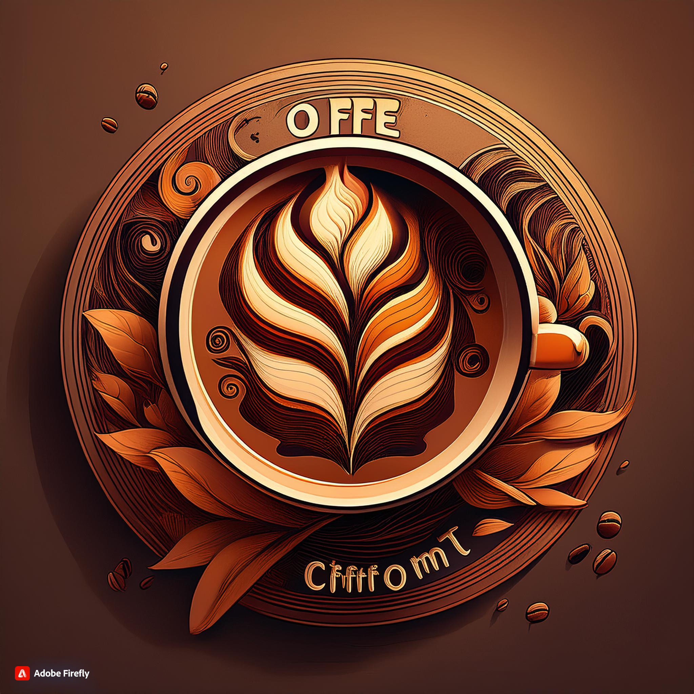

(00)00000-0000
Bem Vindos
ao
Café & Conforto!
Café & Conforto: A Arte de Transformar Cada Xícara em Um Momento de Aconchego e Prazer.
Cardápio de Bebidas - Café & Conforto
Bebidas Quentes:
- Café Expresso - R$ 5,00
Um café encorpado e intenso.
- Café com Leite - R$ 7,00
Expresso com leite vaporizado.
- Cappuccino - R$ 8,50
Café expresso com leite vaporizado e espuma cremosa, polvilhado com canela ou chocolate.
- Latte Macchiato - R$ 9,00
Uma dose de expresso com bastante leite vaporizado e um toque de espuma.
- Chá Quente (Camomila, Chá Preto, Chá Verde) - R$ 6,00
Chá fresco e aromático para uma manhã relaxante.
Bebidas Frias:
- Suco Natural de Laranja - R$ 8,00
Suco de laranja fresco, servido gelado.
- Iced Coffee - R$ 9,50
Café gelado, adoçado e servido com gelo.
- Smoothie de Frutas Vermelhas - R$ 12,00
Mistura de morango, framboesa e amora com iogurte natural.
- Água de Coco - R$ 6,00
Refrescante e natural.
Cardápio de Café da Manhã - Café & Conforto
Pães e Sanduíches:
- Pão na Chapa com Manteiga - R$ 5,50
Pão francês crocante na chapa com manteiga derretida.
- Torrada de Queijo e Presunto - R$ 9,00
Pão tostado recheado com queijo e presunto.
- Croissant com Recheio de Queijo - R$ 10,00
Croissant francês crocante, recheado com queijo derretido.
- Bagel com Salmão e Cream Cheese - R$ 15,00
Bagel fresco com salmão defumado, cream cheese e alcaparras.
Bolos e Doces:
- Bolo de Cenoura com Cobertura de Chocolate - R$ 6,00
Fatia de bolo de cenoura fofinho com cobertura cremosa de chocolate.
- Brownie de Chocolate - R$ 7,00
Brownie de chocolate rico e macio.
- Tapioca Doce com Coco e Leite Condensado - R$ 8,00
Tapioca fina com coco ralado e leite condensado.
- Muffin de Blueberry - R$ 6,50
Muffin leve e fofo com pedaços de blueberry.
Pratos Especiais:
- Omelete de Queijo e Presunto - R$ 12,00
Omelete macio recheado com queijo e presunto, acompanhado de torradas.
- Tapioca Recheada com Queijo e Tomate - R$ 10,00
Tapioca leve e sem glúten, recheada com queijo e tomate fresco.
- Crepioca de Frango - R$ 14,00
Massa de crepioca recheada com frango desfiado e temperos frescos.
- Açaí na Tigela com Granola e Frutas - R$ 18,00
Açaí cremoso com granola crocante e uma seleção de frutas frescas.
Cardápio de Café da Tarde - Café & Conforto
Salgados:
- Empada de Frango com Catupiry - R$ 7,00
Massa fina e crocante recheada com frango desfiado e catupiry.
- Coxinha de Frango - R$ 6,50
Coxinha de massa leve, recheada com frango bem temperado.
- Croissant de Presunto e Queijo - R$ 9,00
Croissant francês crocante, recheado com presunto e queijo derretido.
- Quiche de Alho-Poró - R$ 10,00
Massa leve e amanteigada com recheio cremoso de alho-poró.
Doces:
- Bolo Red Velvet - R$ 8,00
Fatia de bolo de veludo vermelho com cobertura de cream cheese.
- Cheesecake com Calda de Frutas Vermelhas - R$ 9,50
Cheesecake cremoso servido com calda de frutas vermelhas frescas.
- Torta de Limão - R$ 7,00
Torta crocante com recheio cremoso de limão e merengue dourado.
- Palha Italiana - R$ 5,50
Doce de brigadeiro misturado com biscoito, servido em quadradinhos.